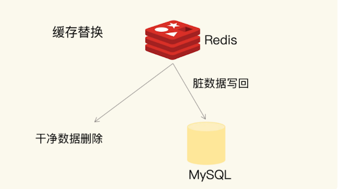

第二节 缓存满后的替换策略
Redis 缓存使用内存来保存数据，避免业务应用从后端数据库中读取数据，可以提升应用的响应速度。那么，如果我们把所有要访问的数据都放入缓存，这样做的性价比反而不高。
举个例子吧。MySQL 中有 1TB 的数据，如果我们使用 Redis 把这 1TB 的数据都缓存起来，虽然应用都能在内存中访问数据了，但是，这样配置并不合理，因为性价比很低。一方面，1TB 内存的价格大约是 3.5 万元，而 1TB 磁盘的价格大约是 1000 元。
另一方面，数据访问都是有局部性的，也就是我们通常所说的“八二原理”，80% 的请求实际只访问了 20% 的数据。所以，用 1TB 的内存做缓存，并没有必要。
为了保证较高的性价比，缓存的空间容量必然要小于后端数据库的数据总量。不过，内存大小毕竟有限，随着要缓存的数据量越来越大，有限的缓存空间不可避免地会被写满。
解决这个问题就涉及到缓存系统的一个重要机制，即缓存数据的淘汰机制
数据淘汰机制包括两步：
- 第一，根据一定的策略，筛选出对应用访问来说“不重要”的数据；
- 第二，将这些数据从缓存中删除，为新来的数据腾出空间，’
1、设置多大的缓存容量合适？
缓存容量设置得是否合理，会直接影响到使用缓存的性价比
1-1 长尾效应
蓝线代表了“八二原理”表示的数据局部性，而红线则表示在当前应用负载下，数据局部性的变化。
蓝线。它表示的就是“八二原理”，有 20% 的数据贡献了 80% 的访问了，而剩余的数据虽然体量很大，但只贡献了 20% 的访问量。这 80% 的数据在访问量上就形成了一条长长的尾巴，我们也称为“长尾效应”。
所以，如果按照“八二原理”来设置缓存空间容量，也就是把缓存空间容量设置为总数据量的 20% 的话，就有可能拦截到 80% 的访问。
为什么说是“有可能”呢？
这是因为，“八二原理”是对大量实际应用的数据访问情况做了统计后，得出的一个统计学意义上的数据量和访问量的比例。具体到某一个应用来说，数据访问的规律会和具体的业务场景有关。对于最常被访问的 20% 的数据来说，它们贡献的访问量，既有可能超过 80%，也有可能不到 80%。
一个电商商品的场景。
- 一方面，在商品促销时，热门商品的信息可能只占到总商品数据信息量的 5%，而这些商品信息承载的可能是超过 90% 的访问请求。这时，我们只要缓存这 5% 的数据，就能获得很好的性能收益
- 另一方面，如果业务应用要对所有商品信息进行查询统计，这时候，即使按照“八二原理”缓存了 20% 的商品数据，也不能获得很好的访问性能，因为 80% 的数据仍然需要从后端数据库中获取。
1-2 重尾效应
在这条红线上，80% 的数据贡献的访问量，超过了传统的长尾效应中 80% 数据能贡献的访问量。
原因在于，用户的个性化需求越来越多，在一个业务应用中，不同用户访问的内容可能差别很大，所以，用户请求的数据和它们贡献的访问量比例，不再具备长尾效应中的“八二原理”分布特征了。
也就是说，20% 的数据可能贡献不了 80% 的访问，而剩余的 80% 数据反而贡献了更多的访问量，我们称之为重尾效应。
正是因为 20% 的数据不一定能贡献 80% 的访问量，我们不能简单地按照“总数据量的 20%”来设置缓存最大空间容量。
在实践过程中，我看到过的缓存容量占总数据量的比例，从 5% 到 40% 的都有。这个容量规划不能一概而论，是需要结合应用数据实际访问特征和成本开销来综合考虑的。
1-3 系统的设计
系统的设计选择是一个权衡的过程：
- 大容量缓存是能带来性能加速的收益，但是成本也会更高，而小容量缓存不一定就起不到加速访问的效果。
- 一般来说，我会建议把缓存容量设置为总数据量的 15% 到 30%，兼顾访问性能和内存空间开销。
对于 Redis 来说，一旦确定了缓存最大容量，比如 4GB，你就可以使用下面这个命令来设定缓存的大小了：
CONFIG SET maxmemory 4gb
不过，缓存被写满是不可避免的。即使你精挑细选，确定了缓存容量，还是要面对缓存写满时的替换操作。缓存替换需要解决两个问题：决定淘汰哪些数据，如何处理那些被淘汰的数据。
2、Redis 缓存有哪些淘汰策略？
2-1 数据淘汰的策略
Redis 4.0 之前一共实现了 6 种内存淘汰策略，在 4.0 之后，又增加了 2 种策略。
我们可以按照是否会进行数据淘汰把它们分成两类：
- 不进行数据淘汰的策略，只有 noeviction 这一种。
- 会进行淘汰的 7 种其他策略。
会进行淘汰的 7 种策略，我们可以再进一步根据淘汰候选数据集的范围把它们分成两类：
- 在设置了过期时间的数据中进行淘汰，包括
volatile-random、volatile-ttl、volatile-lru、volatile-lfu（Redis 4.0 后新增）四种。 - 在所有数据范围内进行淘汰，包括
allkeys-lru、allkeys-random、allkeys-lfu（Redis 4.0 后新增）三种。
下面我就来具体解释下各个策略。
2-2 noeviction 策略
默认情况下，Redis在使用的内存空间超过 maxmemory 值时，并不会淘汰数据，也就是设定的 noeviction 策略
对应到 Redis 缓存，也就是指，一旦缓存被写满了，再有写请求来时，Redis 不再提供服务，而是直接返回错误。
Redis 用作缓存时，实际的数据集通常都是大于缓存容量的，总会有新的数据要写入缓存，这个策略本身不淘汰数据，也就不会腾出新的缓存空间，我们不把它用在 Redis 缓存中。
2-3 volatile-random、volatile-ttl、volatile-lru 和 volatile-lfu
它们筛选的候选数据范围，被限制在已经设置了过期时间的键值对上。也正因为此，即使缓存没有写满，这些数据如果过期了，也会被删除。
例如，我们使用 EXPIRE 命令对一批键值对设置了过期时间后，无论是这些键值对的过期时间是快到了，还是 Redis 的内存使用量达到了 maxmemory 阈值，
Redis 都会进一步按照 volatile-ttl、volatile-random、volatile-lru、volatile-lfu 这四种策略的具体筛选规则进行淘汰。
volatile-ttl在筛选时，会针对设置了过期时间的键值对，根据过期时间的先后进行删除，越早过期的越先被删除。volatile-random就像它的名称一样，在设置了过期时间的键值对中，进行随机删除volatile-lru会使用LRU 算法筛选设置了过期时间的键值对。volatile-lfu会使用 LFU 算法选择设置了过期时间的键值对。
volatile-ttl 和 volatile-random 筛选规则比较简单，而 volatile-lru 因为涉及了 LRU 算法，所以我会在分析 allkeys-lru 策略时再详细解释。 volatile-lfu 使用了 LFU 算法，
相对于 volatile-ttl、volatile-random、volatile-lru、volatile-lfu 这四种策略淘汰的是设置了过期时间的数据，
2-4 allkeys-lru、allkeys-random、allkeys-lfu
allkeys-lru、allkeys-random、allkeys-lfu 这三种淘汰策略的备选淘汰数据范围，就扩大到了所有键值对，无论这些键值对是否设置了过期时间。它们筛选数据进行淘汰的规则是：
allkeys-random策略，从所有键值对中随机选择并删除数据；allkeys-lru策略，使用 LRU 算法在所有数据中进行筛选。allkeys-lfu策略，使用 LFU 算法在所有数据中进行筛选。
这也就是说，如果一个键值对被删除策略选中了，即使它的过期时间还没到，也需要被删除。当然，如果它的过期时间到了但未被策略选中，同样也会被删除。
2-5 LRU 算法
LRU 算法的全称是 Least Recently Used，从名字上就可以看出，这是按照最近最少使用的原则来筛选数据，最不常用的数据会被筛选出来，而最近频繁使用的数据会留在缓存中
LRU 会把所有的数据组织成一个链表，链表的头和尾分别表示 MRU 端和 LRU 端，分别代表最近最常使用的数据和最近最不常用的数据。我们看一个例子。
- 我们现在有数据 6、3、9、20、5。
- 如果数据 20 和 3 被先后访问，它们都会从现有的链表位置移到 MRU 端，而链表中在它们之前的数据则相应地往后移一位。
- 因为，LRU 算法选择删除数据时，都是从 LRU 端开始，所以把刚刚被访问的数据移到 MRU 端，就可以让它们尽可能地留在缓存中。
如果有一个新数据 15 要被写入缓存，但此时已经没有缓存空间了，也就是链表没有空余位置了，那么，LRU 算法做两件事：
- 数据 15 是刚被访问的，所以它会被放到 MRU 端；
- 算法把 LRU 端的数据 5 从缓存中删除，相应的链表中就没有数据 5 的记录了。
其实，LRU 算法背后的想法非常朴素：
- 它认为刚刚被访问的数据，肯定还会被再次访问，所以就把它放在 MRU 端；
- 长久不访问的数据，肯定就不会再被访问了，所以就让它逐渐后移到 LRU 端，在缓存满时，就优先删除它。
LRU 算法在实际实现时，需要用链表管理所有的缓存数据，这会带来额外的空间开销
当有数据被访问时，需要在链表上把该数据移动到 MRU 端，如果有大量数据被访问，就会带来很多链表移动操作，会很耗时，进而会降低 Redis 缓存性能。
当有数据被访问时，需要在链表上把该数据移动到 MRU 端，如果有大量数据被访问，就会带来很多链表移动操作，会很耗时，进而会降低 Redis 缓存性能。
所以，在 Redis 中，LRU 算法被做了简化，以减轻数据淘汰对缓存性能的影响。
- 具体来说，Redis 默认会记录每个数据的最近一次访问的时间戳（由键值对数据结构 RedisObject 中的 lru 字段记录）。
- 然后，Redis 在决定淘汰的数据时，第一次会随机选出 N 个数据，把它们作为一个候选集合。
- 接下来，Redis 会比较这 N 个数据的 lru 字段，把 lru 字段值最小的数据从缓存中淘汰出去。
Redis 提供了一个配置参数 maxmemory-samples，这个参数就是 Redis 选出的数据个数 N。例如，我们执行如下命令，可以让 Redis 选出 100 个数据作为候选数据集：
CONFIG SET maxmemory-samples 100
当需要再次淘汰数据时，Redis 需要挑选数据进入第一次淘汰时创建的候选集合。
这儿的挑选标准是：能进入候选集合的数据的 lru 字段值必须小于候选集合中最小的lru 值。
当有新数据进入候选数据集后，如果候选数据集中的数据个数达到了 maxmemory-samples，Redis 就把候选数据集中 lru 字段值最小的数据淘汰出去。
这样一来，Redis 缓存不用为所有的数据维护一个大链表，也不用在每次数据访问时都移动链表项，提升了缓存的性能。
2-6 淘汰策略三个建议
- 优先使用
allkeys-lru策略。这样，可以充分利用 LRU 这一经典缓存算法的优势，把最近最常访问的数据留在缓存中，提升应用的访问性能。如果你的业务数据中有明显的冷热数据区分，我建议你使用allkeys-lru策略。 - 如果业务应用中的数据访问频率相差不大，没有明显的冷热数据区分，建议使用
allkeys-random策略，随机选择淘汰的数据就行。 - 如果你的业务中有置顶的需求，比如置顶新闻、置顶视频，那么，可以使用
volatile-lru策略，同时不给这些置顶数据设置过期时间。这样一来，这些需要置顶的数据一直不会被删除，而其他数据会在过期时根据 LRU 规则进行筛选。
3、如何处理被淘汰的数据？
一般来说，一旦被淘汰的数据选定后，如果这个数据是干净数据，那么我们就直接删除；如果这个数据是脏数据，我们需要把它写回数据库，如下图所示：

那怎么判断一个数据到底是干净的还是脏的呢？
干净数据和脏数据的区别就在于，和最初从后端数据库里读取时的值相比，有没有被修改过。
- 干净数据一直没有被修改，所以后端数据库里的数据也是最新值。在替换时，它可以被直接删除。
而脏数据就是曾经被修改过的，已经和后端数据库中保存的数据不一致了。此时，如果不把脏数据写回到数据库中，这个数据的最新值就丢失了，就会影响应用的正常使用。
这么一来，缓存替换既腾出了缓
我们在使用 Redis 缓存时，如果数据被修改了，需要在数据修改时就将它写回数据库。否则，这个脏数据被淘汰时，会被 Redis 删除，而数据库里也没有最新的数据了。
4、本节小结
缓存替换时的数据淘汰策略，以及被淘汰数据的处理方法。
Redis 4.0 版本以后一共提供了 8 种数据淘汰策略，从淘汰数据的候选集范围来看，我们有两种候选范围：一种是所有数据都是候选集，一种是设置了过期时间的数据是候选集。
另外，无论是面向哪种候选数据集进行淘汰数据选择，我们都有三种策略，分别是随机选择，根据 LRU 算法选择，以及根据 LFU 算法选择。
当然，当面向设置了过期时间的数据集选择淘汰数据时，我们还可以根据数据离过期时间的远近来决定。
一般来说，缓存系统对于选定的被淘汰数据，会根据其是干净数据还是脏数据，选择直接删除还是写回数据库。
但是，在 Redis 中，被淘汰数据无论干净与否都会被删除，所以，这是我们在使用 Redis 缓存时要特别注意的：当数据修改成为脏数据时，需要在数据库中也把数据修改过来。
先根据是否有始终会被频繁访问的数据（例如置顶消息），来选择淘汰数据的候选集，也就是决定是针对所有数据进行淘汰，还是针对设置了过期时间的数据进行淘汰。
候选数据集范围选定后，建议优先使用 LRU 算法，也就是，allkeys-lru 或 volatile-lru 策略。
合实际应用的数据总量、热数据的体量，以及成本预算，把缓存空间大小设置在总数据量的 15% 到 30% 这个区间就可以。